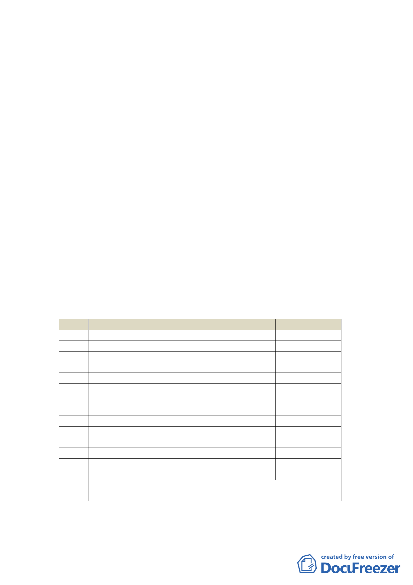

案情概要說明：
一、 本案位於南港區基隆河以南、興南街與重陽路交叉口北側，
計畫面積約4,144平方公尺。
二、 計畫緣起與目的：
本計畫區位於90年9月28日公告「修訂臺北市南港區都市
計畫（主要計畫）通盤檢討案」內土地使用分區為策略型工
業區，為配合南港區工業發展構想，引進具國際競爭力之優
質策略型產業，依主要計畫規定擬定本細部計畫。
三、 擬定計畫內容：
（一） 土地使用分區管制
1. 使用強度
建蔽率45％、容積率200％，本計畫申請新建改建供策
略型產業及其附屬設施使用，依主要計畫規定得獎勵申
請容積10％。其他未規定事項悉依第三種工業區及相關
規定辦理。
2. 土地及建築物使用項目
本計畫區原允許使用組別比照第三工業區，為符合策略
型產業發展，另行規範本計畫區允許使用項目如下表。
項次
11
12
15
18
27
28
29
30
31
32
33
34
圖例
說明
使用類組
日常用品零售業之飲食成品、糧食、水果
飲食業
金融保險業之銀行、合作金庫、信用合作
社、農會信用部、信託投資
旅遊及運輸服務業
策略型產業(資訊服務業)
策略型產業(產品包裝設計業)
策略型產業(機械設備租賃業)
策略型產業(產品展示服務業)
策略型產業(360平方公尺以上之文化藝術
工作室業)
策略型產業(劇場、舞蹈表演場)
策略型產業(剪接錄音工作室)
策略型產業(電影電視攝製及發行業)
○：允許使用
Δ：附條件允許使用
允許使用程度
Δ
Δ
Δ
Δ
○
○
○
○
○
○
○
○
四、 全案係市府98年5月25日府都規字第09831683000號公告公開
展覽並函送到會。
- 16 -